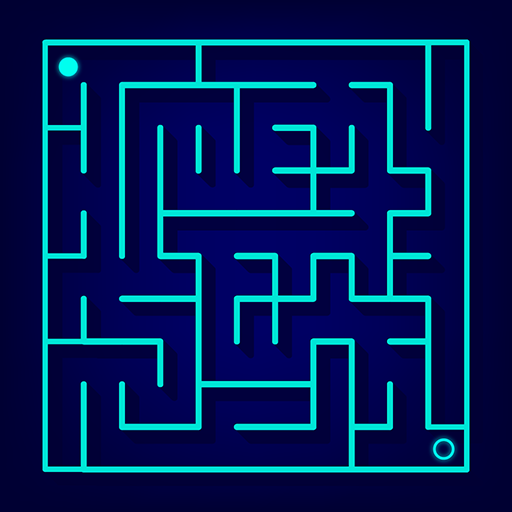
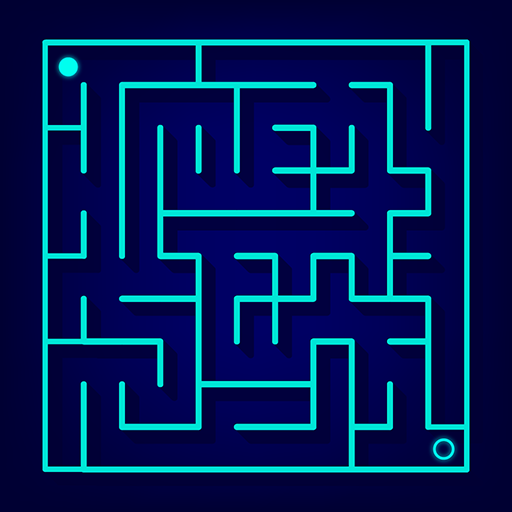

GIỚI THIỆU
Mê cung (Maze) là gì?
Mê cung là một con đường hoặc tập hợp các con đường, thường từ lối vào đến mục tiêu. Tạo mê cung là quá trình thiết kế bố cục của các lối đi và các bức tường trong mê cung bằng cách sử dụng một chương trình máy tính. Một mê cung có thể được tạo ra bằng cách bắt đầu với sự sắp xếp định trước của các ô (phổ biến nhất là một lưới hình chữ nhật nhưng có thể có các cách sắp xếp khác) với các vị trí tường giữa chúng. Sự sắp xếp định trước này có thể được coi là một đồ thị liên thông với các cạnh đại diện cho các vị trí tường có thể có và các nút đại diện cho các ô.
Một số thuật toán tìm đường ra khỏi mê cung
Có rất nhiều thuật toán tìm đường ra khỏi mê cung như ở đây chúng ta sử dụng thuật toán DFS(Depth-First-Search). Thuật toán này có thể được coi là một thuật toán đệ quy quay lui (Backtracking) là một phiên bản ngẫu nhiên của thuật toán tìm kiếm theo chiều sâu.
Tìm hiểu → 
